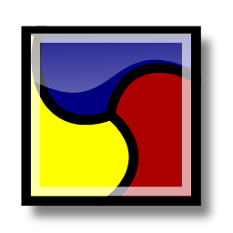

 Qasim (القاسم)
The quick SSHFS mapper
It is a front-end to SSHFS, helping average users to access remote filesystems through ssh.
Simple
Qasim makes your remote shares available simply from the system tray on your favorite desktop !

Compatible and well-integrated
It uses FUSE, thus everything is accessible even under command-line shell.
Data Secure
Access to your data is safe. All transfer is encrypted with the best tools.